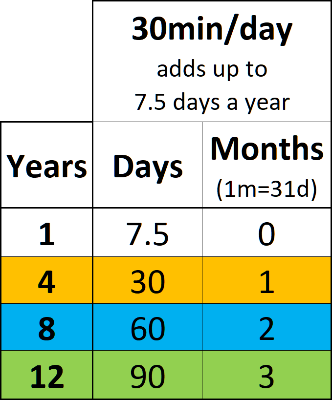
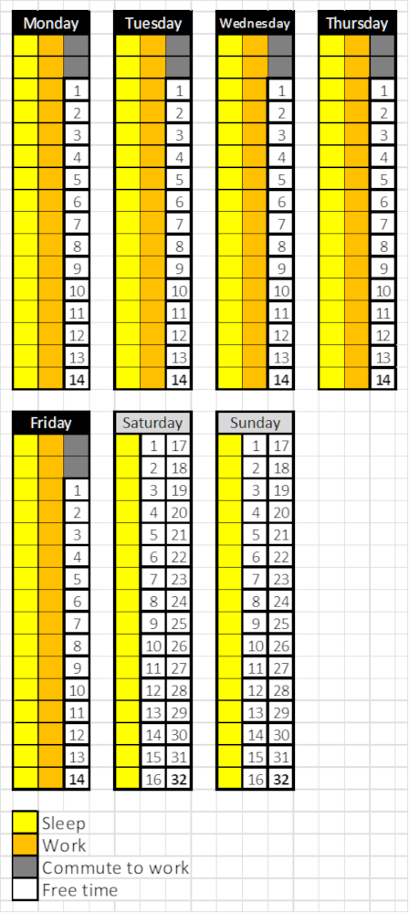
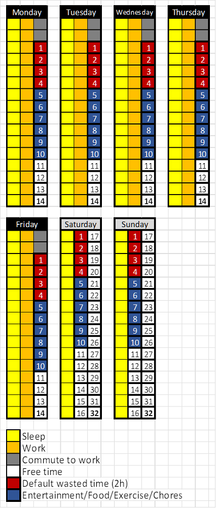
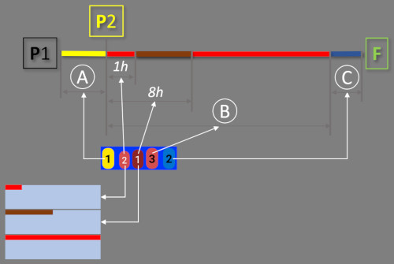
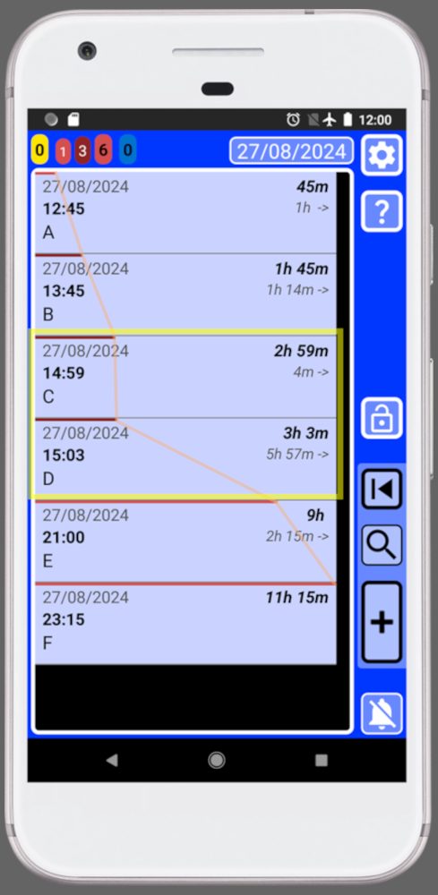

SECURElogBook when information goes in, worries get out!
What is SECURElogBook?
SECURElogBook seamlessly combines records, alarms, and a powerful search system to help you remember everything and store all your information in one place. With its flexible features, you can create alarms and advanced reminders to never miss an important task or event again. Manage your shopping lists effortlessly and store your favourite recipes for easy access. Track what you eat and drink to stay healthy, and keep an eye on your money. You can also use it at work to make you more efficient. The possibilities are endless!
The application is designed to prevent accidental deletion of data, ensuring your data is always safe. When reminders are triggered, they are highlighted in yellow, making them easy to see so you can act on them. You can use SECURElogBook to stay organized, never forget anything, and motivate yourself every day!
SECURElogBook allow you safely save your information as records on a digital timeline. This will build a digital autobiography that you can access through the search system.
In the movie The Matrix, the red pill and the blue pill are metaphorical terms that represent a choice between staying in the ordinary experience of reality with the "blue pill", or learning a life-changing truth by taking the "red pill"... Read on and SECURElogBook can show you where the rabbit hole leads.
On average, people waste about 2 hours daily doing unproductive activities: excessive news consumption, worrying about things that are out of your control, scrolling on websites (Amazon, Netflix, YouTube, TikTok, …), not bundling activities (you can watch a video while you do exercise, you can cook while you listen to your favourite podcast, …), spending more time in the bathroom than necessary, interruptions (calls/notifications/messages/spam), not planning ahead, traffic issues, cooking every day, shopping more than once a week, …
The time we waste does not disappear, on the contrary, it accumulates:
. In 4 years, it will add up to 4 months of wasted time.
. In 12 years, it will add up to 1 year of wasted time.
If the average lifespan is 80 years,
in theory, two twins will live the same amount of time,
but their lives will be very different.
The one who did not waste time will spend over 6 years doing what they love: being with family, lover, friends; learning new skills, travelling, …
One of the many things that SECURElogBook can do is to help you see where you waste time, allowing you to reclaim that time for what truly matters to you.
This table shows how wasting 30 minutes each day accumulates over different numbers of years (first column), converting the total time into days (second column) and months (third column). You can multiply the values in the second and third columns by the number of 30 minute blocks you waste each day (for example: 1 hour = x2, 1h 30min = x3, 2 hours = x4, 2h 30min = x5).

Understanding your free time
Your free time is limited and cannot be accumulated, if you don't use it you will lose it. In addition, there are only two things you can do with time.
On one hand, you might waste it with: excessive news consumption, worrying about things that are out of your control, scrolling on websites (Amazon, Netflix, YouTube, TikTok, …), spending more time in the bathroom than necessary, interruptions (calls/notifications/messages/spam), …
On the other hand, you can use your free time to do what you really want: spending time with your family, being with your partner, learning a new skill, finding a better job, do exercise, travel, …
Basically, the less time you waste, the more time you have to do the things you really want to do.
Let's examine how much free time the average person has:
Total hours in a week: 168
Sleeping hours/week: 56 (8h/day)
Working hours/week: 40 (8h/day)
Commuting to work hours/week: 5 (1h/day)
So, the free hours per week are:
168h total – 56h sleeping – 40h working – 5h commuting (work) = 67 hours
A year typically has 52 weeks. So, the number of free hours per year will be:
67h/week * 52weeks/year = 3484 free hours/year
3484 free hours/year might be hard to visualize. Let's convert it into 30minute blocks per day:
3484 free hours/year = 9.5 free hours/day = 19 free 30min/day
In theory we only have 19 blocks of 30 minutes of free time per day.
These are 5 facts about free time:
1. The first trap is that we usually think that time is infinite, the reality is that time is not infinite. We actually have fewer than 19 blocks of 30 minutes of free time per day.
2. There is something we can call hidden time. For example, when we go shopping, we might know that we usually spend 30 minutes at the shop. However, when planning, we often don't account for the time it takes to travel to and from the store. This travel time can add an additional 30 minutes to 1 hour in total.
3. Between tasks, there is a transition time that adds up at the end of the day. For example, we might know that a recipe takes 15 minutes to prepare, but we don't finish eating when the recipe is done. We still need to eat it, clean the dishes, brush our teeth. This extra time between activities will delay the rest of the activities making us waste time.
4. Bundling activities means combining activities that we usually do separately. For example, people often set aside time to watch the news and a different time to cook. You can reduce the total time spent on these activities by bundling them together. You can cook while the news is live, or you can play the news while you are cooking.
5. The last trap about time is that not all days of the week are equal. This is the real picture of the free time distribution for the average person:

Those 19 blocks of theoretical time per day, in reality become 14 time blocks (7h) from Monday to Friday per day. And, on weekends we have 32 time blocks (16h) per day. This means that wasting a block of time from Monday to Friday has a greater impact than wasting it on the weekend, as we have less than half the time blocks per day from Monday to Friday.
If we add that on average we waste 2 hours a day (red blocks). We can also add up the time we spend on: entertainment, eating, exercising and household chores each day, adding up to a total of 3 hours per day (blue blocks), this will give us a more realistic picture of our time:

With “best conditions” (no kids, only wasting 2 hours a day, not working extra hours, 1 hour total of commuting to work, etc.), our free time really is:
. 2 hours per day from Monday to Friday (4 white blocks).
. 11 hours on each day of the weekend (22 white blocks).
Now that you know these 5 facts about time (time is not infinite, hidden time, transition time, bundling activities, and varying daily free time), it's easier to understand why people say, “I do not have time.” They likely aren't aware of these facts and they are wasting more time than normal. SECURElogBook will allow you to find where you waste time.
And yes, some of you will truly have no time for a period, and that is normal. But most of us are giving up our time without realizing it every time we: watch and extra episode, play for an extra hour, scroll on websites (Amazon, Netflix, YouTube, TikTok, etc.), watch too much news, are excessively interrupted by calls, notifications, and messages; worry about things that are out of our control, ...
The big lesson I learned while creating and using SECURElogBook is that we cannot do everything every day. You cannot watch a show every day and do exercise, go shopping, cook, clean the house, talk to friends and family, study, play video games, watch the news, check social media, etc. You can try, but good luck with that. The logical solution is to plan ahead, bundle activities, move activities to minimize the waste of time.
We may feel like we don't have much time, but the real issue might be that we have too many choices and are trying to do everything every day.
if we waste 30min (1 block) every day:
. In 4 years, it will add up to 1 month of wasted time.
. In 8 years, it will add up to 2 months of wasted time.
. In 12 years, it will add up to 3 months of wasted time.
If we waste 2h (4 blocks) every day:
. In 4 years, it will add up to 4 months of wasted time.
. In 8 years, it will add up to 8 months of wasted time.
. In 12 years, it will add up to 1 year of wasted time.
Do not waste your time, use it or give it to someone else (help others).
Tips
. SECURElogBook is a versatile tool designed to help you remember everything and learn from your past experiences. Its search system allows you to review your records and draw conclusions, helping you improve daily. The app also assists in scheduling your day, showing when your workload is too heavy so you can prevent issues in advance. Task counters indicate your workload, aiding in effective tasks scheduling.
. The app design ensures that reminders cannot be accidentally deleted. This feature is useful create reminders to motivate you to exercise, learn new skills, and more, helping you create or change habits.
. While SECURElogBook is versatile tool and can be used for many purposes, it's important not to get overwhelmed with tasks. The app displays your tasks, but you can easily move your tasks with a few taps if you don't have time at the moment. This feature is designed to remind you of tasks while allowing you to decide when to complete them, remember that you have the control.
. If you ever feel overwhelmed, pay attention to the task counter number. The task counters will help you understand your limit. To improve your life, simply schedule your day to avoid reaching the number of tasks per day that makes you feel overwhelmed.
. For best results, review your unfinished tasks (yellow records) at least twice a day, for example, once early in the morning and once around the noon.
. Check the app before engaging in important activities (like driving, meetings, studying, …) to ensure you have enough free time to avoid interruptions.
. SECURElogBook features a special random incremental sound to minimize annoyance, along with a vibration alert. This balance allows the sound to notify you without disturbing others, and often, you'll feel the vibration before hearing the sound. I hope you find this feature as helpful as I do (remember you can change the alarm volume inside the settings window).
To help you get started, I've created a webpage with manuals, a YouTube channel, and even included a manual within the app itself. I've designed intuitive and logical mechanics to minimize the complexity of this powerful tool. For example, the app uses a visual language that lets you see in advance what each control does. The color of a text box indicates whether it's used for time or dates, and buttons show if they will activate something in the current window or a new one. All buttons are animated and vibrate to give you feedback about what you're doing. Not many apps can do that.
There are many more quality details inside SECURElogBook to ensure you have a great experience. These features make the app as fast and easy to use as possible, so you won't hesitate to use it to improve your life! Soon you will understand the meaning of "SECURElogBook, information goes in and worries get out!".
Thanks for your time
miguel
2. How to create an alarm/reminder (blue record)
3. Event registration (black record)
4. Event registration (yellow record)
5. Favourite menu
6. Shopping list/lists
7. How to create copies of records
8. How to move records/scheduling tasks
9. THE SEARCH SYSTEM
10. Repetitive reminders
SECURElogBook is an innovative concept designed as a versatile tool applicable to both your personal and professional life.
This software, designed with flexibility in mind, allows you to access your information from the past and organize future plans. Rather than constantly worrying about staying on top of everything, you'll have a reliable private assistant that not only reminds you of what's important but it will also assists in scheduling your day. This will free your mind, allowing you to fully enjoy life.
SECURElogBook prioritizes two key aspects: data management and security. It has been meticulously crafted for fast and straightforward data entry, all while ensuring it operates offline and doesn't access your files.
I have been working on this project for more than 4 years. I have dedicated my savings and 100% of my time to this project for the last 2 years. As a result, SECURElogBook has evolved into a high-quality, multifunctional tool.
Despite its user-friendly design, some people that are currently testing SECURElogBook maybe haven't fully grasped the potential behind idea. That is normal, because I designed SECURElogBook as a powerful flexible tool. That means, that the more you know and the more information you add to the program the more it will give you back.
Allow me to explain what SECURElogBook is.
SECURElogBook was designed as a powerful versatile data tool.
To make this idea possible, I've invested a lot of time time. Also, I needed to create the technology to make it possible:
1. Timeline records system that allows the program to work like we do. People and SECURElogBook store information in a timeline. That allows you to remember everything you add to the program.
2. Robust records handling system to make clear and easy to: add, see, edit and search your information.
3. Time/complete colour code system to make possible to store important information in a visible language that everyone can understand.
4. Task counters system that allows to predict your workload. Also it adds extra meaning to your list data. as task counters are related to the records.
5. System to remember everything thanks to how SECURElogBook has been designed.
6. Relative times values to fully control time, no more wasted time trying to understand your information. SECURElogBook gives you dynamically all you need.
7. Quality of life and details to make everything logical, easy, fast while minimizing the possibility of errors. SECURElogBook design minimizes the time required to input information so you will not hesitate to add your ideas, shopping lists, reminders, alarms, ...
8. Dynamic lists for when you need something that cannot be described as a single record. This allows to create shopping lists, recipes, quick manuals, ...
9. SECURITY and PRIVACY to have the peace of mind that your data is yours.
10. Powerful search system that allows you to find everything, or group information to allow you to draw conclusions and improve every day.
When you combine all those systems in one program, like SECURElogBook does, you can do:
1. Alarms.
2. Screen time tracker.
3. Diet tracker.
4. Reminders.
5. Shopping list app.
6. Money tracker.
7. Medication intake log.
8. Calendar.
9. Period tracker.
10. Personal motivator.
11. Fitness tracker.
12. Mental health diary.
13. Personal organiser.
14. Tool for remembering everything.
15. Habit tracker.
16. Schedule your work.
17. Tool for improvement, as you can analyse your data with the search system to learn from them.
18. Personal diary.
And much more!
Thanks to SECURElogBook design everything is secure, easy, straightforward, and fast. In addition, thanks to how it has been built, you will never hesitate to add what's important to you.
Once it's inside SECURElogBook, you won't forget it.
The app for everything, right at your fingertips!
Secure it! with SECURElogBook!
1. Timeline and records
We are constantly doing something. We can either plan for future actions or do something right now. However, as time passes, everything transitions into the past. Thus, everything we do is encapsulated within our timeline.SECURElogBook is a program that is capable of recording information on the timeline of your life:

Everything we do or plan happens always on a specific day and time:

These tasks, ideas, alarms, reminders, and more can be seen as records contained into our life's timeline:

. Dark = Completed records.
. Yellow = Missing records, that you must review as soon as possible.
. Blue = Future records.
2. Robust records handling system
Now we know that SECURElogBook is able to store information like us, inside of a timeline.How we can handle the information so it is fast and easy to introduce.
I have created a solid simple system to manage information using dedicated windows:

Basically, I created a structure with 3 windows:
. Editor (teal) to be able to change information of a record once you tap on it in the main window (blue)
. Main window (blue) to allow see and search your information.
. Creator (green) to introduce new information into the system.
2.1 Main window (blue)
The main window, with a blue background, allows you to see and search information:

A = Task counters. Allow to see the missing alarms/tasks and workload for today and tomorrow.
B = Date button. This button will move the main list to the next yellow record or the present time.
C = Settings. Access to: security PIN, audio settings, date format, records delete system, import/export system and about window.
D = Help. Help documentation for this window.
E = App lock button.
F = List of records. Here you can find all your data. Tap on a record to edit it.
G = Last record. This button opens last record that you saved or copied.
H = Search. The search system will allow you to find and group information to draw conclusions from your data.
I = Add record. It opens the green record creator window.
J = Stop alarm button.
2.2 Creator window (green)
This window has all you need to create records.
Once the creator window is open the record is set to not completed by default and the time is always set to the current time, past.
It's crucial to understand that the list will display records that match or follow the moment of the record we are creating (D and F). Additionally, altering the time (D) or date (F) values will dynamically update the list (K).

A = Time seeker buttons. Up, to select previous record time. Down, to select next record time. These buttons match the time of the current record with the one selected through the buttons, first in the list. Once both records are at the same time you can add or remove time to perfectly control where to place the record.
B = Record text.
C = Update time button. It will set our record with the current time.
D = Time values. To set the hours and minutes of your record.
E = Add time windows. This button has two actions:
PRESS = Window with preset values that you can customise.

LONG PRESS = Window that allows to add or remove time and date values.
F = Calendar. It will open the calendar to allow to select a date.
G = Favourites. Button to open a menu that you can customise with the things you do regularly so instead of writing you will be able to select your things from a list.
H = Save button.
I = Complete button. Use it to indicate if the record is completed (dark background) or not completed (yellow background on past or blue on the future).
J = Copy button. This will create a copy of the record. Remember that copy and save buttons will become red when there is already a record using that exact time.
K = List of records. Here you can find all your data. Hold on a record to edit it.
L = Help. Help documentation for this window.
M = Stop alarm button.
2.3 Editor window (teal)
The editor window will allow you to change your records and also create lists by pressing the button with a "L" (for list).
Like with the creator window (green background), it's crucial to understand that the list will display records that match or follow the moment of the record we have selected (D and F). Additionally, altering the time (D) or date (F) values will dynamically update the list (K).

A = Time seeker buttons. Up, to select previous record time. Down, to select next record time. These buttons even the time of the current record with an existing one. Once both records are at the same time you can add or remove time to perfectly control when the new record will be triggered.
B = Record text.
C = Update/Restore time button. This button has two actions: PRESS = It will set our record with the current time, HOLD = It will restore the record's values (text, time and date).
D = Time values. To set the hours and minutes of your record.
E = Add time windows. This button has two actions:
TAP = Window with preset values that you can customise.
LONG PRESS = Window that allows to add or remove time and date values.
F = Calendar. It will open the calendar to allow to select a date.
G = Favourites. This will open a menu that you can customise with the things you do regularly so instead of writing you will be able to select your things from a list.
H = Clear record text button.
I = Save button.
J = Complete button. Use it to indicate if the record is completed (dark background) or not completed (yellow background on past or blue on the future).
K = List(L)/Copy(C) button. This button will change its behaviour depending on the record time:
LIST: If we do not change the record time, we can press the list button “L” to add an item and create a list.
COPY: If we change the record time, the button will change to “C” to allow to create a copy the record. This feature is particularly handy for setting up advance alerts for very important records.
L = Delete record button. Use it to delete the current record. Be aware there is a powerful delete system inside the settings button on the main window (blue).
M = List of records. Here you can find all your data. Hold on a record to edit it.
N = Help. Help documentation for this window.
O = Stop alarm button.
3. Time/complete colour code system
OK, SECURElogBook allows you to record information like we do. We store things in the past or in the future inside our timeline. But we also remember if we completed something or not.SECURElogBook, like you, can also record if we did or not something. To indicate whether you've completed something or not, there is a button to toggle between "not completed" and "completed":

Imagine having a list of everything you've done and everything you plan to do right in front of you.
Having all that information in a small screen will mean small text, a lot of written information, … that will create a very bad user experience.
Colors can serve as an additional layer of information to replace written information. It is possible to represent whether a record belongs to the past or the future or whether we have completed it or not, using colors, like when we interpret green or red lights on a traffic light.
SECURElogBook system transforms the past/future and no completed/completed information into colours, making things faster and easier:
. Past:
Completed
. Future:
Completed / Not completed (alarm activated)
The colour code system automatically makes less important records less visible while highlighting important ones:
. Dark = Completed records.
. Blue = Future records.
. Yellow = Missing records, that you must review as soon as possible.
Thanks to the colour code system, instead of checking the current time and comparing it with the record time, you can simply glance at the colour to determine if a record is completed or not, and whether it's in the future or the past.
The colour code system ensures that even with thousands of records in your SECURElogBook, you can quickly identify what requires your attention. Bright colours naturally draw our focus, which is why missing tasks or alarms are highlighted in yellow, while future tasks are represented in bright blue.
This picture represents the same data at different times. The colour code system highlights automatically the important information:

These two phones, in the image above, show the same information at different times.
The dynamic colour change helps you to see where the important records are, yellows and first blues. The present is always where records change from black or yellow to blue.
No matter how many records you have, understanding the information is very easy once you understand the colour code system:
. Dark = Not important.
. Blue = Future records.
. Yellow = Very important records that you must review.
The colour code system also prevents mistakes. For example, if you want to set an alarm to wake up tomorrow, your record should be blue, since yellow and black records belong to the past. Notice that
4. Task counters system
The tasks counters are like a radar that allow to figure out your workload at different times. These are a set of values displayed on the top left corner of the SECURElogBook window.SECURElogBook store all the tasks, alarms, records, reminders, lists, ideas, … everything in an infinite list of records.
While an infinite list with all your data could look like a great idea, it quickly becomes overwhelming without a system in place to provide context to help you to understand the data.
Essentially, the task counters in SECURElogBook provide crucial information through a visually intuitive representation that combines colours, numbers, time, and sizes:

Basically, the tasks counters divide the timeline in 3 areas:
. A = YELLOW records = Not completed records (past).
. B = Records with RED bar = Today’s records.
. C = Records with BLUE bar = Tomorrow’s records.
SECURElogBook will give special importance to the today’s records, those with a red bar. For this reason, the application divides them into three counters:
. First (bright red) = Number of future records in less than 1h.
. Second (dark red) = Number of future records between after 1 hour and before 8 hours.
. Third (bright red) = Total number of pending records for today (B).
Now you know how the task counters system works, scheduling your day becomes easier. In no time, you'll be able to assess how many tasks you can handle. With SECURElogBook, You can react to make a day with many tasks less problematic.
If our task counter shows these values [ 0 1 3 6 0 ] that means:
. Yellow = There are 0 records to review.
. Red-first (bright red) = I have 1 task to do in less than 1h.
. Red-second (dark red) = There are 3 tasks between after 1 hour and before 8 hours.
. Red-third (bright red) = The total number of tasks for today is 6.
. Blue = Tomorrow I will have 0 tasks to do.
Since version 1.8, the bars for today’s and tomorrow’s records are dynamic, meaning they will adapt their size to be proportional to the time remaining until the record is activated:

Now, records set to trigger around the same time will have similar-sized bars. So, there is no need to compare time values to determine if there is a time conflict between records, since it can be visually appreciated when the time bars of the records are similar (highlighted in yellow).
With SECURElogBook, you can quickly identify potential time conflicts by simply looking at the size of the time bars to see if there are records set to trigger around the same.
This system allows you identify quickly what you are looking for, even if you have thousands of records in your SECURElogBook.
The SECURElogBook task counter system is designed to streamline your daily scheduling, making it not only easier and faster but also more efficient. You can use the task counters values as your workload density value. In another words, it will allow you to see when you are overloaded with too many things to do. With time, the data will let you see when you are working too hard. Now, thanks to SECURElogBook you will be able to identify the situation and fix it to prevent health issues.
By using the task counter values as a workload density metric, you can easily identify when you're overwhelmed with tasks. Over time, the task counter information will help you recognize when you're pushing yourself too hard. Thanks to SECURElogBook, you'll be able to proactively address such situations to prevent making mistakes and health issues.
5. Built to remember everything
SECURElogBook ensures that you remember everything you add to it due to its carefully designed structure.If you use SECURElogBook to create a record to help you to remember something
Because yellow records (missing tasks/records) are very important. The yellow task counter, the notification and the app icon badge will show the number of yellow tasks (missing tasks/records).
When you want to indicate that task/record is completed, you must press the complete button. The record will change from not completed
SECURElogBook has been carefully designed to make it difficult to change the "not completed/completed" value of the record accidentally. On one hand, you must open the editor window to edit the record. On the other hand, the colour will change indicating that the value has changed.
Basically, once you add something to your SECURElogBook it is impossible to forget it! Because the default state of a new record is not completed. Blue with alarm (future), or yellow (past) indicated with notification and yellow counter.
This easy method is very efficient.
First, I always create a copy of the record with the new time. Then, I reset the time, set record as completed and save the record. So, with a few taps on the screen, I recorded that I completed the task and I created a copy for the future.
6. Relative times values to fully control time
Let's say it is 12.00 and we have something to do at 12.15, what comes to your mind? 15 minutes? Because that is what you want to know, the time between the present and the task you want to do.When you have something to do, a fixed time value like 12:15 may not be as useful as a relative time value like 15min. While 12:15 remains constant, a relative time value is dynamic, updating continuously to provide you with relevant information at each moment: 15min, 14min, ..., 5min, ..., 1min, 0min.
SECURElogBook relative time function allows you to react in advance to possible problems. This is possible because the program clearly indicates the time gap between the present and each record (past and future). In addition, each record also shows the time between that record and the following.
SECURElogBook displays on the right side of every record, the time gap between the present and that record in bold text. And below it, the time between that record and the next record:

Most apps display only the typical date and time values. However, these values are often meaningless in isolation. To understand their significance, you must repeatedly check the current time and mentally calculate the time gap between each record and the present moment. This process leaves room for errors.
With SECURElogBook, there's no need for guesswork. All relevant information is presented clearly, eliminating the need for manual calculations. The SECURElogBook design ensures that understanding the data is straightforward.
Every record dynamically shows the time gap between the current record and the present, as well as the time difference between that record and the next. Armed with this knowledge, scheduling your day becomes a piece of cake.
Having dynamic relative time information for each record allows you to fully control time, as you do not need to guess anything.
Also, this feature is used when we group records using the search system. Not only allowing you to find what you are looking for, but also giving you the time between the records on your search.
7. Quality of life and details
I have extensive experience in software development, technical documentation, and managing complex spreadsheets and databases. Working on small devices adds an extra layer of complexity as the screen size is limited. To enhance the user experience, I've implemented numerous quality-of-life features, particularly related to handling text, dates, and time.In SECURElogBook, as in most programs you have the option to manually input time by performing mental calculations, or you can tap buttons on these windows:
. Window with preset time values that you can customise.
. Window that allows to add or remove time and date values.
Calculations made with help windows make everything faster, easier and reduce the possibility of errors. But in addition, as SECURElogBook gives you all the values for each record, you will never have doubts.
SECURElogBook allows you to easily control the exact time between records.
You can easily synchronize the time of a new record with an existing one, SECURElogBook has dedicated buttons to do that. Then, you can add 55 minutes to the existing time and save. This ensures that the new record will be triggered 55 minutes after the previous one.
Alternatively, you can subtract 25 minutes using the minus symbol and save, creating a record that will be triggered 25 minutes before the original record.
All of this can be done seamlessly, without any errors, making it a quick and straightforward process.
In SECURElogBook, you can type, or you can modify the favourite menu system to your like:
SECURElogBook is designed to optimize your tasks inside or out of home.
Customize your favorite menu to quickly access things you write frequently, eliminating repetitive typing.
Enhance searchability by tagging data with labels. Labelling with "WATER" will help me find everything related to water. In the future, if I want to know how much water I have drunk, I can do a search for "water".
By the way, when we create a backup, the favourites menu data is also included. That means that it worth to work on customising the favourites menu as it will save you a lot of time.
Investing effort into tailoring the favourites menu to your routine is worthwhile. After all, we each have a finite set of activities, meals, drinks, and tasks in our daily lives. And for those unique occasions, you can always input data manually.
8. Dynamic lists
Sometimes, a single record is not enough to define a what we need to do. This is why SECURElogBook allows to create lists. You can create copies of them, move them and change the complete value of each item of the list:
Lists allow you to create shopping lists, recipes, or describing anything that cannot be summarized with a single record. For instance, You can use ready to describe processes at work, provide instructions on how to install Windows, compile documentation needed for a legal process, remember the movies you want to watch, or note down things you'd like to discuss with your doctor.
With SECURElogBook you will save time as your lists are always with you.
That means that you do not need to dedicate a specific time to do something like the shopping list. You can create the shopping list and whenever you remember something you need to buy, you can add it right away. Or simply, you can create a duplicate of the last one and modify it.
Since you can add items to your lists at any time, you'll be more efficient and reduce the chances of forgetting to include important items. Forgetting things always has a negative impact on our lives. Especially if they are work-related things. Don't worry, with SECURElogBook you won't forget anything!
SECURElogBook allows you to extract information and share it using any app capable of transferring text. For example, you can easily send your shopping list to your partner.
9. SECURE and PRIVACY
SECURElogBook is like a finely tuned data management tool.It efficiently stores, handles, and searches information, all while being incredibly user-friendly and fast. But why should someone choose SECURElogBook?
The answer lies in its privacy features: SECURElogBook doesn't access your files or rely on the internet.
In fact, I'm confident that SECURElogBook will be the program, handling your data, on your phone with the fewest Android permissions.
Android permissions are controls that determine what data and features an app can access on your device.
SECURElogBook:
. Does not use the internet: It operates entirely offline.
. Does not access your files: Your data remains private.
. Does not rely on third-party code: SECURElogBook is independent, utilizing only code developed by Android/Google and myself.
. Features an encrypted PIN code: You can enable this extra layer of security.
SECURElogBook runs 100% locally and remains isolated from your device. In essence, there's no connection between SECURElogBook data and the outside world or the internet.
You can import and export information, since I have designed an ingenious system that achieves this without using the Internet or accessing your files.
10. The Search System
Why was SECURElogBook designed like a finely tuned data harvesting tool?SECURElogBook has safety, speed, ease of use, unlimited ability to store information, but the most important thing is the search system.
Because SECURElogBook can store thousands of records without problems, the search system is integrated into the dedicated window to eliminate records. This makes finding and deleting records very easy, even when you have thousands of records.
The search system not only allows you to find everything you want easily and quickly. In addition, it allows you to group your records to draw conclusions from them to improve every day.
In SECURElogBook everything is stored in the same place for a reason: the search system.
This program was designed as a powerful and versatile tool. Thanks to its technology, you can store all your information in one location: your ideas, texts, hyperlinks, alarms, reminders, medication intake, food and drink consumption, workouts, work-related notes, and even your shopping lists.
By centralizing everything, the robust search system can efficiently group and display your information, allowing you to draw conclusions to get better every day.
With SECURElogBook you do not need to delete anything. In fact, we need to do the opposite, the more you add to SECURElogBook the more you will learn and this will help to improve your life.
For instance, using SECURElogBook, you can either delay your alarm as you would in a typical program or opt to delay a copy of it. The key distinction lies in the fact that when you create a copy, you are creating additional data that can provide information of your emotional or physical health.
When you feel good, you always wake up at the same time. However, when you're not feeling well, usually you will delay your alarm. Unlike a standard alarm program, SECURElogBook provides this additional information.
The picture below shows the search data for “Wake up!”:

We already made a search for “Wake up”, now we can click the search button again to see the search values. If we press the button highlighted with a yellow circle, we will be able to create a report using the search data:

The search data shows that I have been waking up every day at 07.00, but since the 25/05/2024 I needed more time in bed. Thanks to SECURElogBook you know when the issue started and maybe piece of information will help you to fix the problem.
The SECURElogBook search system allows multi-search of words. You can group information using 2 to 5 keywords.
. I need your help
Over the past 4 years, I've honed my skills and developed the technology that powers SECURElogBook. For the last 2 years, I've invested my savings and 100% of my time into creating this powerful, flexible tool.To launch SECURElogBook on Google Play, I need to conduct a closed test with at least 20 users actively using the app for 14 consecutive days.
Because I have priced the app, less than 2 Euros, the new Google Play policy requires people who help me with the close test to pay for the program. This is why I need your help.
Do not worry, this is not my first complex program. That means that I do not expect you to do my job. I heavily tested every system I added to SECURElogBook so it should not have issues.
When you pay for SECURElogBook, you're investing in a high-quality program that could potentially transform your life. Your feedback matters, too! Feel free to suggest new features or report any issues you encounter (Link at the bottom of the page).
Thank you to those already using the app the version you'll receive is even better.
. Close test
Let's help each other!Thank you in advance for helping me make my dream come true! I hope you appreciate the dedication and effort invested in creating the smart features and the level of quality of SECURElogBook.
I need 20 people that will use the app for 14 days continuously, this is what is known as the Google Play close test. Once we achieve this milestone, SECURElogBook will be publicly available for everyone to download.
Currently, you can only access the program through a Google Play invitation.
This video will give you an idea of the process that the app must follow to be able to be public on Google Play (By the way, you do not need to see the video. I added it because it shows why I need to ask for your Gmail account):
If you want to participate and have access to SECURElogBook please follow these steps:
1. To be able to participate in the close test you must be invited. Google Play will use your Gmail to allow you to download the app once you are invited.
2. To be invited you need to send me your Gmail account.
3. How to find your Gmail account?
. Open Google Play.
. Click on the icon on the top right corner (1).
. (2) is the Gmail account that Google Play is using.

Only the Gmail account above will work.
4. Send me that Gmail I will add you to the close test list. This is my Gmail: mgllgmsama5@gmail.com The easiest way is to send me an email using your phone. This normally will use the Gmail account linked to your Google Play. Add this: I want to participate in Google Play SECURElogBook close test. This will let me know that I need to send you an invitation.
5. I will add your Gmail to the list of people for close test.
6. I will send you a Google Play link to be able to download the app from Google Play (Without being invited SECURElogBook will not be visible).
7. You will receive an email from me (mgllgmsama5@gmail.com) with the invitation link inside. Once you open the link, you will see the invitation with a button to accept being a tester (bottom).
Press the button. The new window, will enable you to download the app from the link highlighted in yellow.
Now you can intall SECURElogBook!
Welcome to the selected group of people able to remember everything! Thanks to SECURElogBook!
. Please let me know your feedback inside this video
Click on the video title to open the video and add your comment.Feel free to:
. Report a bug.
. Suggest changes or new features.
. Give me a virtual hug! Telling me you like the app or that it is helping you!
. Share with others how you use SECURElogBook in or out of work.
Make a comment and I will take care of it!
Thanks for your time
miguel
mgllgmsama5@gmail.com
If you want to help me and don't want or can't spend money, click on the video above and give me more strength!
For over 4 years, I've been working on this project. I've done it all by myself. I'm even using my savings to dedicate myself to this project 100%.
Programming and creating are incredibly easy for me! But making videos, handling documentation, sorting out all the paperwork for Google Play, creating web pages… Despite being easy compared to SECURElogBook programming it is not something I enjoy doing. But it is my duty to SECURElogBook.
Doing all this hasn't been difficult for me. But now, I'm facing the most challenging part: promoting myself!
At work, I always use quality to promote myself automatically. It's easy because there are people around.
However, exposing your product on the vast Internet sea isn't easy. My ship is now searching for that island called Community… where people can appreciate the idea of SECURElogBook.
If you send me a comment about the SECURElogBook idea, I'll be grateful!